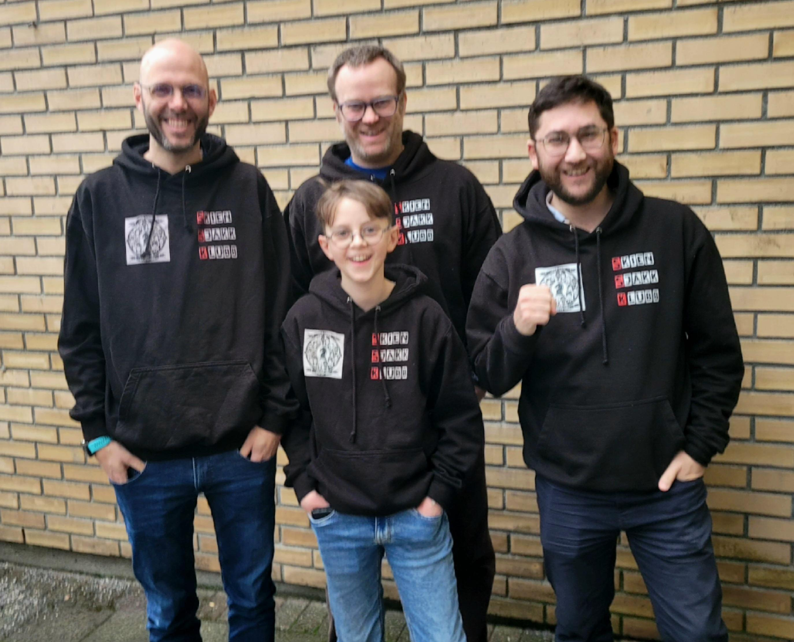
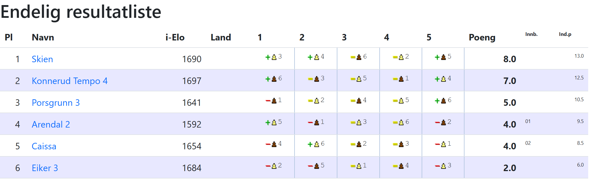
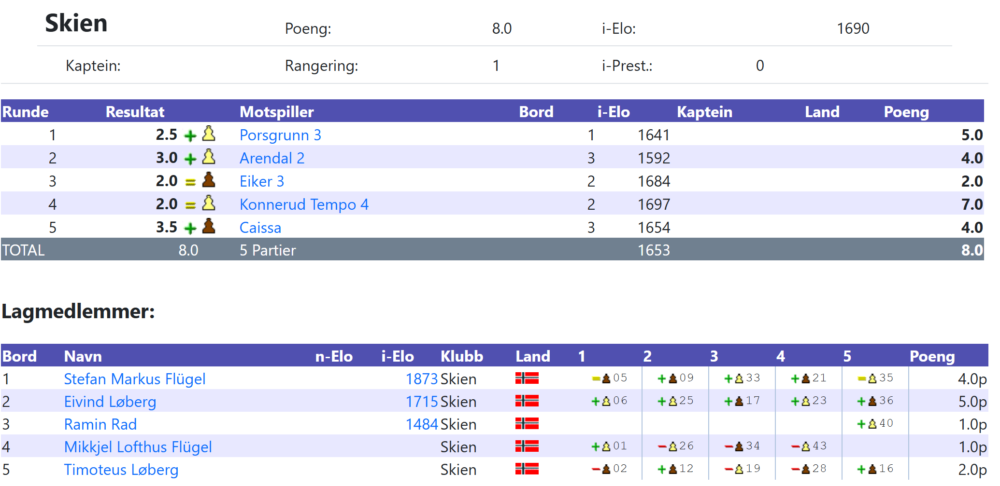
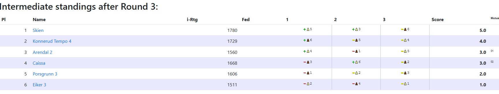
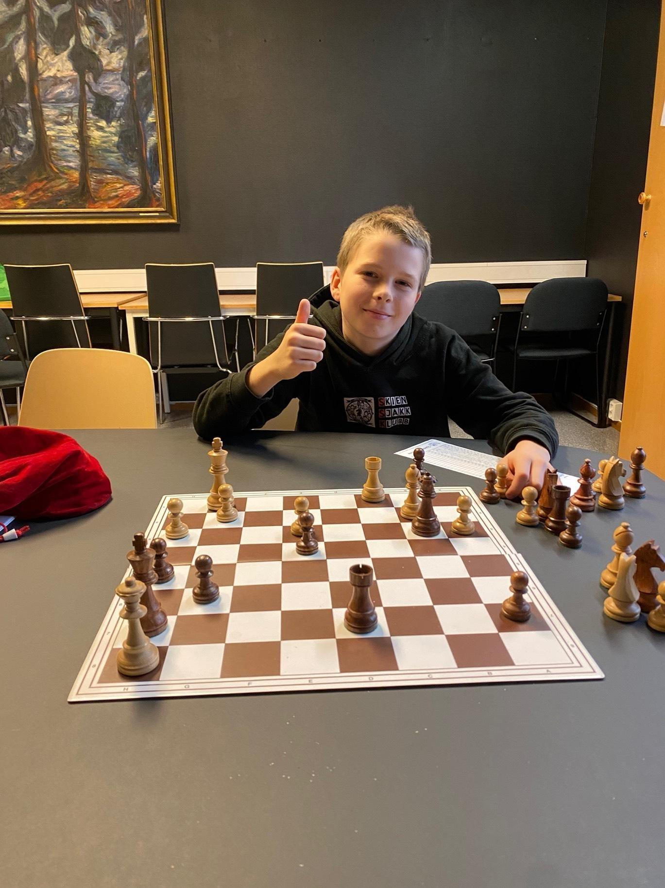
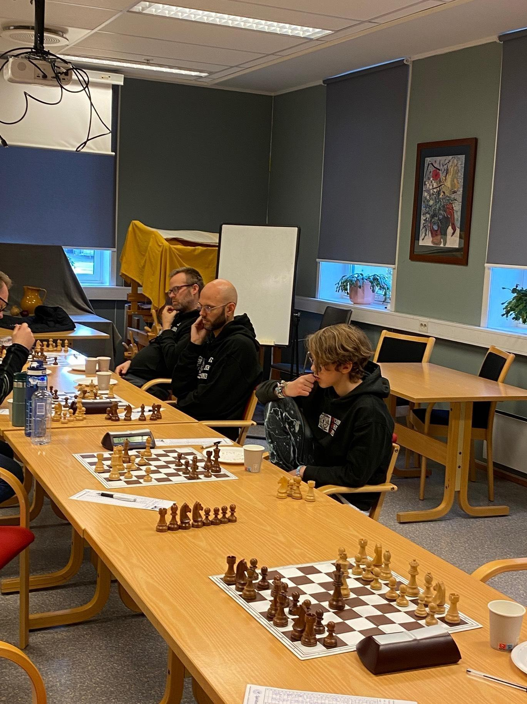

Hva er Østlandsserien?
Østlandsserien er en lagturnering for sjakklubber i Østlandsområdet. Skien Sjakklubb deltar i Divisjon 4, gruppe 2 i sesong 2025/2026.
Seriemester etter flott seier mot Caissa (8.3.2026)
Vi vant 3,5 - 0,5 mot Caissa og forsvarte dermed første plass i gruppen vår. Det betyr at vi kan spille i klasse 3 neste sesong! Det var en flott laginnsats. Timoteus vant sitt andre svartparti denne sesongen, denne gangen endelig mot en ratet spiller! Ramin, som steppet inn for Mikkjel i dag, spilte et flott angrepsparti med Wing-varianter i siciliansk åpning. Eivind vant også sin femte parti denne sesongen. Maksimal utbytte; utrolig bra. Stefan holdt remis i et sluttspill med tårn og tre bønder mot dronning og to bønder, og går dermed ubeseiret ut av sesongen.



Vi må ikke glemme Mikkjel i dag, som var på farta med skolekorpset. Hans seier i første runde gjorde opprykk i utgangspunktet til en mulighet.
Med dette er sesongen 2025/2026 forbi. Vi satser på å stille med to lag i sesongen 2026/2027!
Fortsatt ubeseiret i Østlandsserien 2025/2026 (8.2.2026)
I dag spilte vi 2:2 mot fjerde lag til Konnerud Tempo.
Det blir en skikkelig finale mot Caissa Sjakklubb om 4 uker!
Vi leder fortsatt Gruppe B etter 2:2 mot Eiker 3 (18.01.2026)
I runde 3, spilte vi en jevnt kamp (2:2) mot Eiker 3 og vi topper fortsatt tabellen med 5 av 6 mulig poeng.

3-1 seier mot Arendal 2 (7.12.2025)
I runde 2, vant vi vant 3-1 mot Arendal 2 og vi topper tabellen med 4 av 4 mulig poeng.
Vellykket Comeback i Østlandsserien mot Porsgrunn 3 (2.11.2025)
Vant vi vant 2.5-1.5 mot vår venner fra mot Porsgrunn 3. Det er trolig godt over 10 år siden Skien Sjakklubb spilte seriensjakk!

